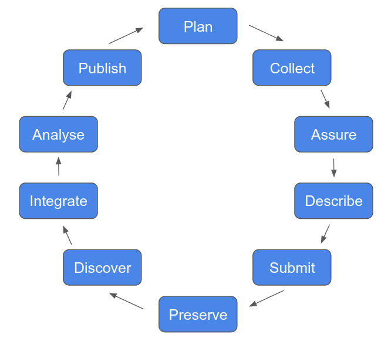

Big Data Ecology
Biodiversity science is transitioning into the age of Big Data, with massively expanding digital data collections and infrastructure. To keep pace with these developments, biodiversity researchers are increasingly adopting practices and tools from traditionally more technical fields such as informatics and data science. I developed and held this three-day workshop for the BioMove research training group in order to equip their graduate students with the skills necessary to make their work count in the age of big data ecology.
The course introduces FAIR principles, data federation and the data life cycle as the core concepts underlying modern ecological research and builds technical skills with lectures on version control, data bases, spatial data and high performance computing. The lectures are accompanied by practical sessions, where students can get hands-on experience with the presented topics. As an overarching element, students develop an example research project throughout the course following best-practices.
Further resources
All course materials are freely available for re-use and adaptation on my GitHub .